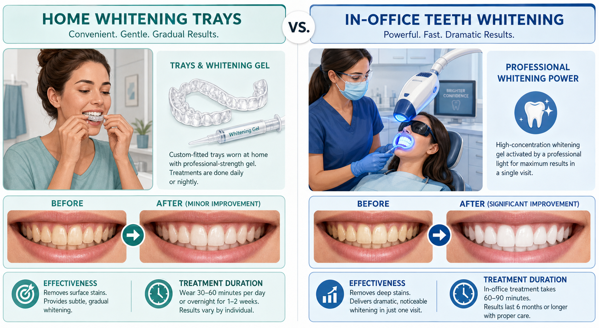

Teeth Whitening Options Compared: What Works Best?

Teeth whitening is one of the most requested cosmetic dental treatments, and for good reason — a brighter smile genuinely improves confidence and appearance. But with dozens of whitening options available from professional treatments to grocery store strips, understanding what actually works and what's safe is important before you start. Here's an honest comparison of the main teeth whitening methods.
In-Office Professional Whitening
In-office whitening (like ZOOM or Opalescence Boost) uses high-concentration hydrogen peroxide gel applied by a dental professional. The treatment typically takes 60-90 minutes and can lighten teeth 6-10 shades in a single appointment. It's the fastest and most dramatic option. Professional supervision means the concentration can be higher than over-the-counter products while protecting gums and managing sensitivity. Results last 12-18 months with proper maintenance. Cost is typically $400-$600 at dental offices — Aloha Smile offers this at $399.
Custom Take-Home Trays (Professional)
Dentist-provided take-home trays use custom-fitted mouthguard-style trays filled with professional-grade whitening gel. Worn for 30 minutes to several hours daily for 1-2 weeks, they achieve results similar to in-office whitening more gradually. The custom fit ensures the gel contacts teeth evenly and minimizes gum exposure. Take-home trays can be reused for maintenance whitening by purchasing additional gel syringes. Cost is typically $250-$400, and we offer this at $299.
Over-the-Counter Whitening Strips
Crest Whitestrips and similar products contain lower concentrations of peroxide that are safe for consumer use. They can noticeably whiten teeth with consistent use — typically 1-2 shades of improvement over 2 weeks. Results are less dramatic than professional treatments, and the one-size-fits-all strips can miss some areas and expose gums to the bleaching agent. They're a reasonable maintenance option between professional treatments but are not a replacement for them.
Whitening Toothpastes and Rinses
Whitening toothpastes work primarily through mild abrasives that remove surface staining rather than through true bleaching. They can maintain a whitened smile but won't meaningfully lighten intrinsic tooth color. They're appropriate for everyday maintenance but shouldn't be expected to provide the same results as peroxide-based treatments.
Who Is a Good Whitening Candidate?
Not all tooth discoloration responds equally to whitening. Yellowish staining from coffee, tea, and aging responds very well. Grayish discoloration from tetracycline antibiotics is resistant to whitening. Existing crowns, veneers, and composite fillings do not whiten — if you have visible restorations, whitening the surrounding natural teeth can create a mismatch. A dental consultation before whitening identifies whether you're a good candidate and which method will give you the best results.
Aloha Smile Dental offers professional in-office and take-home whitening in Wailuku, Maui. Book a whitening consultation today.
Book Whitening Consultation